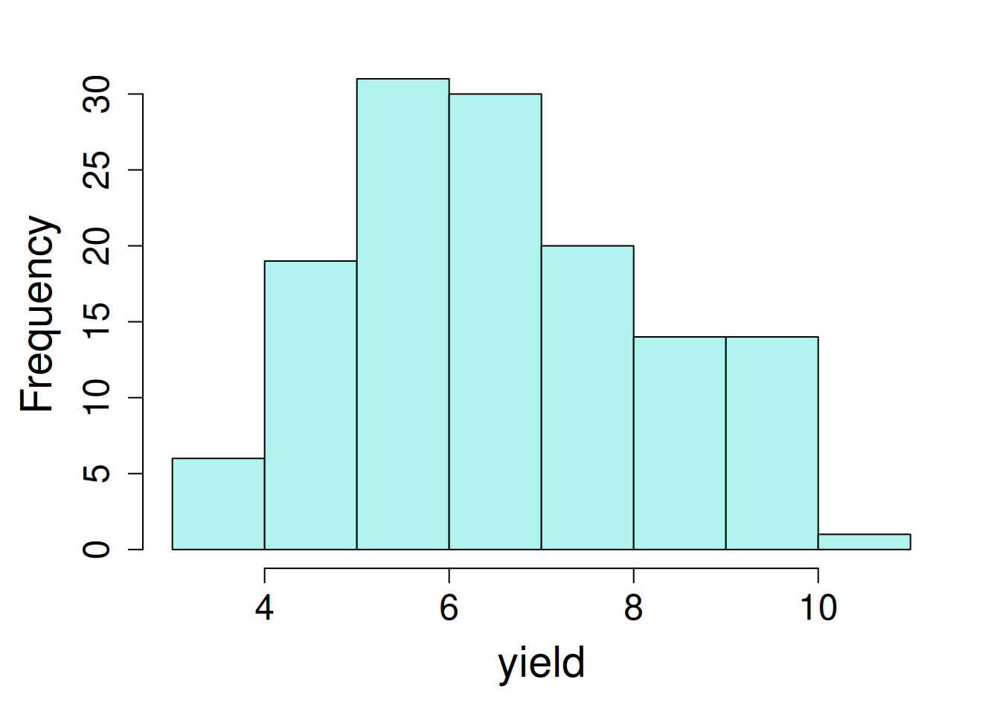

library(dplyr)
library(lme4); library(lmerTest); library(broom.mixed)
library(emmeans); library(performance)7 Split-Split Plot Design
The split-split-plot design is an extension of the split-plot design to accommodate a third factor: one factor in main-plot, other in subplot and the third factor in sub-subplot
7.1 Details for split-split plot designs
The statistical model structure this design:
\[y_{ijk} = \mu + \rho_j + \alpha_i + \beta_k + (\alpha_i\beta_k) + \tau_n + (\alpha_i\tau_n) + (\tau_n\beta_k) + (\alpha_i\beta_k\tau_n) + \epsilon_{ijk} + \delta_{ijkn}\] Where:
\(\mu\)= overall experimental mean, \(\alpha\) = main effect of whole plot (fixed), \(\beta\) = main effect of subplot (fixed), \(\tau\) = main effect of sub-subplot, \(\epsilon_{ij}\) = whole plot error, \(\delta_{ijk}\) = subplot error.
\[ \epsilon \sim N(0, \sigma_\epsilon)\]
\[\ \delta \sim N(0, \sigma_\delta)\]
The assumptions of the model includes normal distribution of both the error and the rep effects with a mean of zero and standard deviations of \(\sigma_\epsilon\) and \(\sigma_\delta\), respectively.
7.2 Example Analysis
library(dplyr)
library(nlme); library(emmeans)
library(broom.mixed); library(performance)In this example, we have a rice yield data from the agricolae package. The experiment consists of 3 different rice varieties grown under 3 management practices and 5 Nitrogen levels in the split-split plot design.
rice <- read.csv(here::here("data", "rice_ssp.csv"))| block | blocking unit |
| nitrogen | different nitrogen fertilizer rates as main plot with 5 levels |
| management | management practices as subplot with 3 levels |
| variety | crop variety being a sub-subplot with 3 levels |
| yield | yield (bushels per acre) |
7.2.1 Data integrity checks
Before analyzing the data let’s do some preliminary data quality checks. We will start with evaluation of the structure of the data where class of block, nitrogen, management and variety should be a character/factor and yield should be numeric.
str(rice)'data.frame': 135 obs. of 6 variables:
$ X : int 1 2 3 4 5 6 7 8 9 10 ...
$ block : int 1 1 1 1 1 1 1 1 1 1 ...
$ nitrogen : int 0 0 0 50 50 50 80 80 80 110 ...
$ management: chr "m1" "m2" "m3" "m1" ...
$ variety : int 1 1 1 1 1 1 1 1 1 1 ...
$ yield : num 3.32 3.77 4.66 3.19 3.62 ...Here we need to convert block, nitrogen, variety, and management to characters.
rice$block <- as.character(rice$block)
rice$nitrogen <- as.character(rice$nitrogen)
rice$management <- as.character(rice$management)
rice$variety <- as.character(rice$variety)Next, run a cross tabulations to check balance of observations across independent variables:
table(rice$variety, rice$nitrogen, rice$management), , = m1
0 110 140 50 80
1 3 3 3 3 3
2 3 3 3 3 3
3 3 3 3 3 3
, , = m2
0 110 140 50 80
1 3 3 3 3 3
2 3 3 3 3 3
3 3 3 3 3 3
, , = m3
0 110 140 50 80
1 3 3 3 3 3
2 3 3 3 3 3
3 3 3 3 3 3It looks perfectly balanced, with exactly 3 observation per treatment group.
Last, check the distribution of the dependent variable by plotting a histogram of yield values using hist() in R.
hist(rice$yield)

7.2.2 Model Building
The variance analysis of a split-split plot design is divided into three parts: the main-plot, subplot and sub-subplot analysis. We can use the nesting notation in the random part because nitrogen and management are nested in blocks. We can do blocks as fixed or random.
model_lmer <- lmer(yield ~ nitrogen * management * variety +
(1 | block / nitrogen / management),
data = rice,
na.action = na.exclude)boundary (singular) fit: see help('isSingular')tidy(model_lmer)# A tibble: 49 × 8
effect group term estimate std.error statistic df p.value
<chr> <chr> <chr> <dbl> <dbl> <dbl> <dbl> <dbl>
1 fixed <NA> (Intercept) 3.90 0.386 10.1 89.7 1.79e-16
2 fixed <NA> nitrogen110 0.753 0.545 1.38 89.7 1.71e- 1
3 fixed <NA> nitrogen140 0.165 0.545 0.302 89.7 7.63e- 1
4 fixed <NA> nitrogen50 0.335 0.545 0.614 89.7 5.41e- 1
5 fixed <NA> nitrogen80 1.33 0.545 2.44 89.7 1.68e- 2
6 fixed <NA> managementm2 0.420 0.540 0.779 80.0 4.38e- 1
7 fixed <NA> managementm3 1.43 0.540 2.65 80.0 9.82e- 3
8 fixed <NA> variety2 1.45 0.540 2.68 80.0 8.83e- 3
9 fixed <NA> variety3 1.48 0.540 2.74 80.0 7.49e- 3
10 fixed <NA> nitrogen110:managem… 0.377 0.763 0.493 80.0 6.23e- 1
# ℹ 39 more rowsmodel_lme <- lme(yield ~ nitrogen*management*variety,
random = ~ 1|block/nitrogen/management,
data = rice,
na.action = na.exclude)
tidy(model_lme)Warning in tidy.lme(model_lme): ran_pars not yet implemented for multiple
levels of nesting# A tibble: 45 × 7
effect term estimate std.error df statistic p.value
<chr> <chr> <dbl> <dbl> <dbl> <dbl> <dbl>
1 fixed (Intercept) 3.90 0.386 60 10.1 1.43e-14
2 fixed nitrogen110 0.753 0.545 8 1.38 2.05e- 1
3 fixed nitrogen140 0.165 0.545 8 0.302 7.70e- 1
4 fixed nitrogen50 0.335 0.545 8 0.614 5.56e- 1
5 fixed nitrogen80 1.33 0.545 8 2.44 4.08e- 2
6 fixed managementm2 0.420 0.540 20 0.779 4.45e- 1
7 fixed managementm3 1.43 0.540 20 2.65 1.55e- 2
8 fixed variety2 1.45 0.540 60 2.68 9.38e- 3
9 fixed variety3 1.48 0.540 60 2.74 7.99e- 3
10 fixed nitrogen110:managementm2 0.377 0.763 20 0.493 6.27e- 1
# ℹ 35 more rowsboundary (singular) fit: We get a message that the fit is singular. What does this mean? Some components of the variance-covariance matrix of the random effects are either exactly zero or exactly one. OK what about in English? Basically it means that the algorithm that fits the model parameters doesn’t have enough data to get a good estimate. This often happens when we are trying to fit a model that is too complex for the amount of data we have, or when the random effects are very small and can’t be distinguished from zero. We still get some output but this message should make us take a close look at the random effects and their variances.
7.2.3 Check Model Assumptions
Model Diagnostics: we are looking for a constant variance and normality of residuals. Checking normality requiring first extracting the model residuals and then generating a qq-plot and qq-line. we can do all at one using one function check_model().
check_model(model_lmer, check = c('normality', 'linearity'))
check_model(model_lme, check = c('normality', 'linearity'))Constant variance and normality of residuals looks good. Here, we didn’t observe any anomalies in the model assumptions.
7.2.4 Inference
Let’s look at the analysis of variance for fixed effects and their interaction effect on yield.
car::Anova(model_lmer, type = 'III', test.statistic="F")Analysis of Deviance Table (Type III Wald F tests with Kenward-Roger df)
Response: yield
F Df Df.res Pr(>F)
(Intercept) 102.1211 1 89.706 < 2e-16 ***
nitrogen 1.9160 4 86.474 0.11496
management 3.6962 2 77.143 0.02932 *
variety 4.9129 2 60.000 0.01057 *
nitrogen:management 0.2118 8 77.143 0.98797
nitrogen:variety 2.6681 8 60.000 0.01413 *
management:variety 2.2193 4 60.000 0.07754 .
nitrogen:management:variety 0.5289 16 60.000 0.92105
---
Signif. codes: 0 '***' 0.001 '**' 0.01 '*' 0.05 '.' 0.1 ' ' 1anova(model_lme, type = "marginal") numDF denDF F-value p-value
(Intercept) 1 60 102.12108 <.0001
nitrogen 4 8 1.91603 0.2012
management 2 20 3.69617 0.0431
variety 2 60 4.91295 0.0106
nitrogen:management 8 20 0.21177 0.9850
nitrogen:variety 8 60 2.66810 0.0141
management:variety 4 60 2.21929 0.0775
nitrogen:management:variety 16 60 0.52893 0.9210Here, we observed a significant impact of management, variety, and nitrogen x variety interaction effect on rice yield. We can estimate the marginal means for each treatment factor (variety, nitrogen, management) which will averaged across other factors and their interaction.
emmeans(model_lmer, ~ management)NOTE: Results may be misleading due to involvement in interactions management emmean SE df lower.CL upper.CL
m1 5.90 0.102 11.2 5.68 6.12
m2 6.49 0.102 11.2 6.26 6.71
m3 7.28 0.102 11.2 7.05 7.50
Results are averaged over the levels of: nitrogen, variety
Degrees-of-freedom method: kenward-roger
Confidence level used: 0.95 emmeans(model_lmer, ~ nitrogen*variety)NOTE: Results may be misleading due to involvement in interactions nitrogen variety emmean SE df lower.CL upper.CL
0 1 4.51 0.227 49 4.06 4.97
110 1 5.44 0.227 49 4.99 5.90
140 1 5.08 0.227 49 4.62 5.53
50 1 4.76 0.227 49 4.31 5.22
80 1 5.83 0.227 49 5.38 6.29
0 2 5.16 0.227 49 4.71 5.62
110 2 6.92 0.227 49 6.47 7.38
140 2 7.29 0.227 49 6.83 7.74
50 2 6.02 0.227 49 5.56 6.47
80 2 6.59 0.227 49 6.13 7.04
0 3 6.48 0.227 49 6.02 6.93
110 3 8.44 0.227 49 7.99 8.90
140 3 9.34 0.227 49 8.88 9.79
50 3 7.88 0.227 49 7.42 8.34
80 3 8.56 0.227 49 8.11 9.02
Results are averaged over the levels of: management
Degrees-of-freedom method: kenward-roger
Confidence level used: 0.95 emmeans(model_lme, ~ management)NOTE: Results may be misleading due to involvement in interactions management emmean SE df lower.CL upper.CL
m1 5.90 0.102 2 5.46 6.34
m2 6.49 0.102 2 6.05 6.92
m3 7.28 0.102 2 6.84 7.71
Results are averaged over the levels of: nitrogen, variety
Degrees-of-freedom method: containment
Confidence level used: 0.95 emmeans(model_lme, ~ nitrogen*variety)NOTE: Results may be misleading due to involvement in interactions nitrogen variety emmean SE df lower.CL upper.CL
0 1 4.51 0.227 2 3.54 5.49
110 1 5.44 0.227 2 4.47 6.42
140 1 5.08 0.227 2 4.10 6.05
50 1 4.76 0.227 2 3.79 5.74
80 1 5.83 0.227 2 4.86 6.81
0 2 5.16 0.227 2 4.19 6.14
110 2 6.92 0.227 2 5.95 7.90
140 2 7.29 0.227 2 6.31 8.27
50 2 6.02 0.227 2 5.04 6.99
80 2 6.59 0.227 2 5.61 7.57
0 3 6.48 0.227 2 5.50 7.46
110 3 8.44 0.227 2 7.47 9.42
140 3 9.34 0.227 2 8.36 10.31
50 3 7.88 0.227 2 6.90 8.86
80 3 8.56 0.227 2 7.59 9.54
Results are averaged over the levels of: management
Degrees-of-freedom method: containment
Confidence level used: 0.95 Notice we get a message that the estimated means for ‘nitrogen x variety’ are averaged over the levels of ‘management’. So we need to be careful about how we interpret these estimates.
Nested random effects
You may have noticed the order of random effects in model statement:
model_lme <- lme(yield ~ nitrogen*management*variety,
random = ~ 1|block/nitrogen/management,
data = rice,
na.action = na.exclude)The random effects follow the order of ~1|block/main-plot/split-plot. While fitting the model for split-split plot design please make sure to have a clear understanding of the main plot, split-plot and split-split plot factors to avoid having an erroneous model.